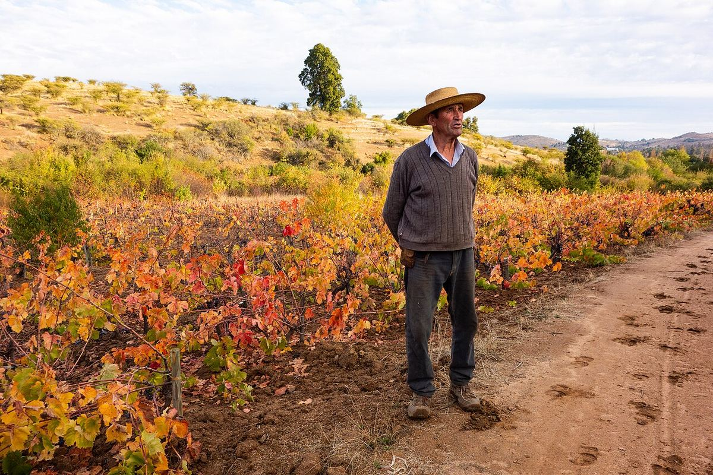

Vallée du Maule
La vallée du Maule, à l’extrémité sud de la Vallée centrale, est la zone qui compte la plus grande surface de vignes du Chili. À côté d’une production à grande échelle, elle conserve de vieilles vignes de carignan et de país cultivées sans irrigation, à l’origine de certains des vins les plus originaux du pays.

Histoire
Le Maule est l’une des plus anciennes zones viticoles du Chili. À l’époque coloniale et pendant une bonne partie du XIXe siècle, on y planta surtout le país, cultivé en gobelet et sans irrigation sur les collines de ce qu’on appelle le secano interior. Après le tremblement de terre de 1939, qui détruisit de nombreuses vignes, la culture du carignan s’étendit afin d’apporter couleur et acidité aux vins. Au XXe siècle, la région fut synonyme de vin en vrac et de grands volumes, mais depuis le début du XXIe siècle de petits producteurs et des domaines reconnus ont récupéré les vieilles vignes pour en tirer des vins de qualité. Un groupe de producteurs a créé l’association VIGNO, qui réunit des rouges à base de carignan issus de vieilles vignes non irriguées du Maule.
Géographie et climat
La vallée s’organise autour du fleuve Maule et de ses affluents, comme le Claro, le Loncomilla et le Tutuvén, avec la ville de Talca pour principal centre. Le climat est méditerranéen, un peu plus frais et plus pluvieux que dans les vallées situées plus au nord, avec des hivers humides et des étés secs. On distingue le secteur irrigué de la vallée centrale, plat et productif, et le secano interior, sur les collines de la cordillère de la Côte, où les vignes dépendent uniquement de la pluie. Vers l’est, sur le piémont andin, les nuits sont plus fraîches.
Sols
Dans la vallée centrale dominent des sols alluviaux et volcaniques, profonds et fertiles. Dans le secano interior prédominent des sols granitiques, de granite décomposé, pauvres et retenant peu l’eau, très adaptés aux vieilles vignes à faible rendement.
Cépages et styles
Dans le secteur irrigué, on cultive cabernet-sauvignon, merlot, carménère, sauvignon blanc et chardonnay, dont une part importante est destinée à des vins de grand volume. Dans le secano, le carignan de vieilles vignes donne des rouges à la couleur profonde, aux fruits rouges et noirs, à l’acidité vive et à la bonne structure, tandis que le país offre des vins légers, rustiques et frais, souvent élaborés selon des méthodes traditionnelles. On trouve aussi de vieilles vignes de cinsault, de malbec et de muscat. Ces vins de secano ont contribué à renouveler l’image du vin chilien.
Vignerons et patrimoine
Une part considérable du vignoble de secano appartient à de petits propriétaires qui, pendant des générations, ont vendu leur raisin à de grandes entreprises. La valorisation des vieilles vignes leur a ouvert de nouvelles perspectives, même si l’exode rural et le remplacement des vignes par des plantations forestières restent des menaces pour ce patrimoine viticole.